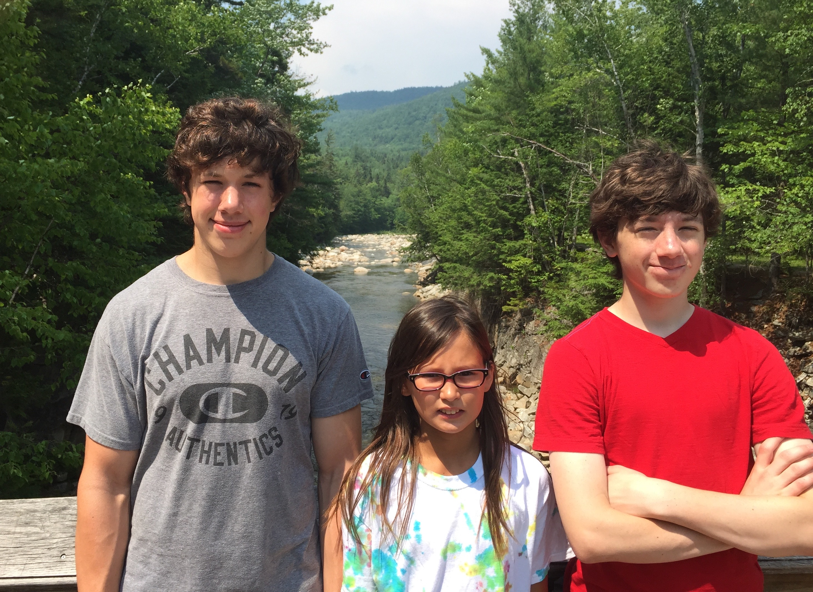

About Me
Personal Background
I was born and raised in Zionsville, Indiana, a nice, suburban town about a half-hour North-West of Indianapolis. In my free time, I enjoy working on software projects, exercising, fishing, card and board games, reading (big fan of The Economist), playing the piano, and spending time with my friends.
Computer Science Background
For as long as I can remember, I was always fascinated by computers and technology in general. As a child, I figured out how to change the user's profile picture, and I remember feeling like a 'hacker'. I would get the same feeling later on in middle school when I figured out how to change my laptop's screen-saver (the middle school blocked editing settings on rental laptops), and figuring out how to change what my grades showed by clicking 'Inspect Element' in Firefox, and playing around with the HTML.
I first got into programming during the summer before my senior year of high school, when I found Codecademy, a website that helps people learn simple programming concepts in a variety of different languages for free. I started out with the JavaScript course, and at the end, I made my own rock, paper, scissors game. In taking the Codecademy courses, I learned that writing software has more to do with problem solving and abstract thinking than I had previously imagined. Using creativity to approach a problem and come up with a solution is a very rewarding experience for me, and that’s what makes me passionate about computer science.
Summer 2018
Emoji Detector
I devoted this summer to furthering my knowledge and experience with programming. I began by exploring and trying different projects, ideas, languages, and frameworks. I started out using Angular CLI to build a convenient, accessible homepage for my personal use to get around the web quickly. I also started checking out development with Swift and Xcode. Inspired by a tutorial by the Purdue iOS Development Club that I attended during my freshman year, I tried out a Core ML model from this list. I got the model working in one night, but spent the next four weeks or so learning and building this basic model app into Emoji Detector.
GroupMac
Upon reaching a point where I was satisfied with Emoji Detector (My philosophy is that a project is never over; there's always ways to improve and expand.), I began working on a native, macOS client for GroupMe. The GroupMe API is fairly easy to access and use, I use GroupMe quite often, and it seemed like the perfect next-step after completing Emoji Detector. I spent the next month or so deepening my Swift ability and building GroupMac.